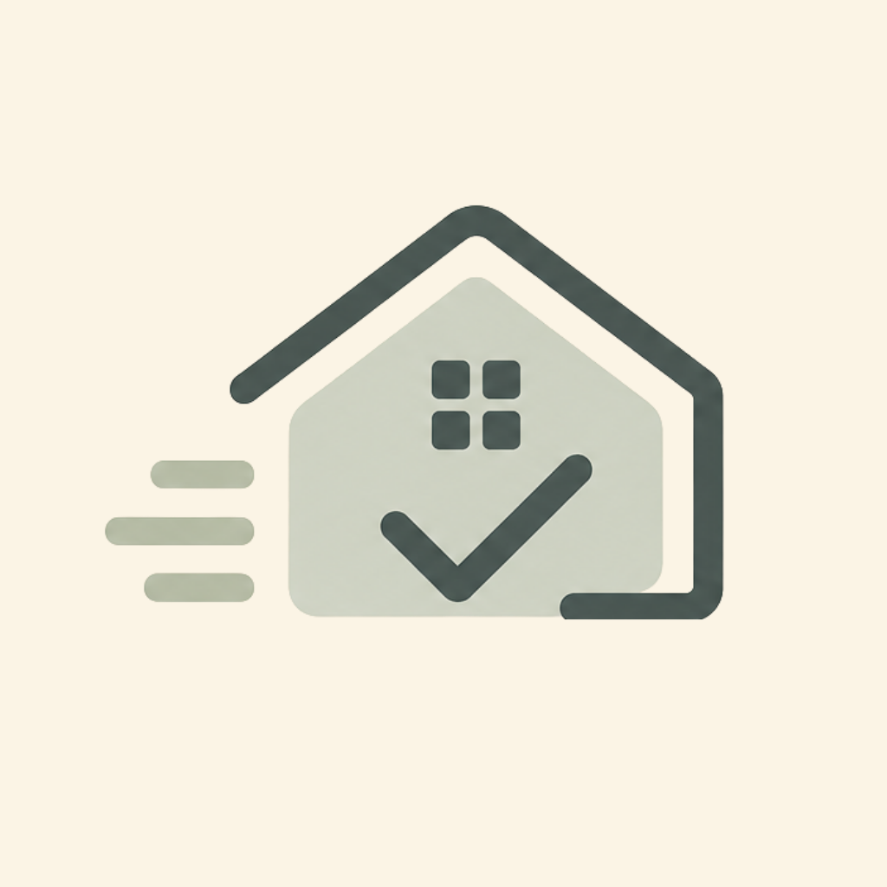

Built from your home
Start with an intake that reflects the home you actually live in.

Household planning that starts with real life
Huney helps couples, families, roommates, and busy households turn the invisible work of home into a shared plan for cleaning, meals, maintenance, pets, cars, and the little routines that keep life moving.
Start with an intake that reflects the home you actually live in.
Assign, rotate, and complete work across the people in your household.
Use calendars and reminders so upkeep lands when it can actually happen.
What Huney is
Most household tools make you build the system yourself. Huney starts with the shape of your home, then helps create, schedule, and share the work that normally lives in one person's head.
The point
Huney is meant to feel warm, practical, and human. It gives the household a plan without turning home into a performance dashboard.
It covers
It avoids
Why it exists
It was created from the very normal feeling that a home can be full of care, love, routines, errands, maintenance, and tiny obligations, but still lack one shared place where all of that work can live.
Huney gives that work a home. It helps the household see what needs attention, who can take it, and when it fits into the week.
Less carrying the household plan alone.
Fewer tense check-ins about what got done.
Less forgetting when maintenance last happened.
Who it is for
Huney is designed for real homes: imperfect weeks, changing schedules, shared responsibilities, half-finished chores, dinner decisions, pets, appointments, repairs, and people who are trying.
For partners who want a clearer way to split home work without turning every task into a conversation.
For families managing kids, pets, meals, school weeks, health routines, and the upkeep that comes with it.
For shared homes that need rotating ownership, lightweight accountability, and fewer mystery messes.
For people who want their home to feel cared for without needing to become a full-time household project manager.
How it works
Set up the home once, then use Huney as the shared place for recurring tasks, ownership, reminders, meals, maintenance history, and the household details that are easy to lose track of.
Add your home type, bedrooms, bathrooms, pets, cars, routines, cooking frequency, desired cleanliness level, and the people who share the work.
Huney suggests household tasks and cadences across cleaning, maintenance, groceries, pets, car care, health, and daily reset routines.
Tasks can be assigned, opened to anyone, rotated, edited, completed, or updated as the household learns what actually works.
Meals and reminders can land on the real calendar so dinner, upkeep, and routines show up where the household already looks.
Plan meals, build the grocery list, and send it to your store cart.
Huney turns planned meals into groceries you can add directly from the app.
2 planned meals
Lunch 12:00 PM
Dinner 5:15 PM
Meals and groceries inside the household plan
Huney keeps meal planning close to the rest of home care. Add a recipe, keep the ingredients and prep steps handy, then send the grocery list straight to Kroger, Fry's, or another Kroger-family store cart from the app. Dinner can also land on the shared calendar so cooking fits beside tasks, routines, appointments, and maintenance reminders.
Huney
A warm, practical household app for the work that keeps life cared for.